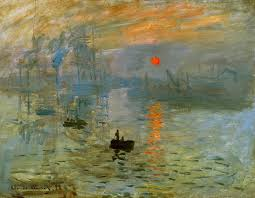

Woman with a Parasol

Impression,Sunrise

The Water-Lily Pond

Claude Monet is an impressionist painter of France. He is one of the creators about impressionist style. The word 'Impressionism' came from his painting named 'Impression : Sunrise.' He sticked the impressionism principle that light is color. He also investigated the change of same object according to the degree of light. The work named 'Water-Lilies' is evaluated as a masterpiece which showed the universal vision of nature.
Woman with a Parasol
Impression,Sunrise
The Water-Lily Pond